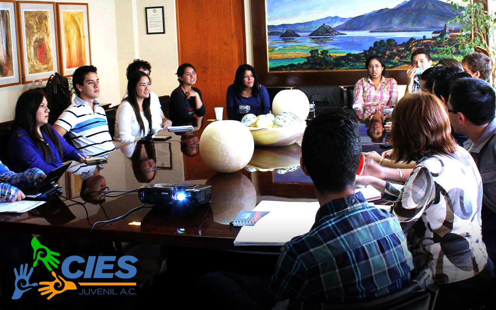

El Consejo Interuniversitario Estatal Juvenil A.C. CIES Juvenil, Michoacán. Es una asociación civil apartidista, integrada y dirigida por los alumnos de las Universidades e Institutos Tecnológicos de nuestro Estado, único en su tipo en el país. El cual, participa desde su fundación en la vinculación e integración de todos los universitarios del Estado, con el objetivo de emprender acciones en beneficio de la juventud.

Conoce a todos los jóvenes universitarios, lideres e innovadores que han formado parte de nosotros y que con esfuerzo, dedicación y empeño, trabajan para hacer de CIES una de las asociaciones juveniles universitarias más importantes e influyentes a nivel regional, estatal y nacional.
LEER MÁSConoce nuestros inicios, proyectos y eventos que han formado parte de nuestra historia, además del avance que ha tenido CIES a través de los años, gracias al esfuerzo y apoyo de nuestros numerosos miembros y diversas empresas, organismos e instituciones gubernamentales.
LEER MÁSCada año, CIES realiza el encuentro interuniversitario a nivel estatal con la participación de muchas universidades del estado. Jóvenes de todos lo niveles, habilidades, carreras y medios se reunen para reflexionar, debatir y compartir distintos objetivos.
Generar un espacio de reflexión y debate para los jóvenes, buscando que rompan paradigmas y toquen conceptos de interés general de la sociedad.
Buscamos desarrollar temas como la tecnología, la innovación, el emprendimiento y la superación de retos y convertirlas en fortalezas juveniles.
Apoyar e impulsar a todos los jóvenes universitarios y los proyectos que quieran llevar acabo, para el beneficio de la sociedad actual y del futuro.